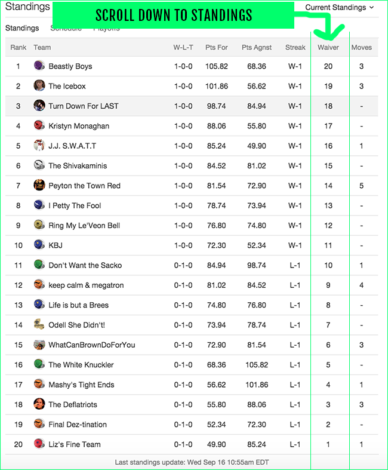

Waiver Priority
Generally, after each week the league is ranked by best teams to worst team. This is first organized by record, and if two teams have the same record then it is determined by which team has more overall points. So the waiver priority goes in reversed order, worst teams have highest waiver priority and can have first choice of available players. All waivers are processed by wednesday.
Pickups
Now that you know what the waiver wire is and how priority works, it's good to know what good pickups are and what pickups are fools gold. Most people will see a player have a good week and want to pick them up. This is wrong, you should not mainly be looking for points. The main thing to look at is consistency and evidence to show its repeatable.
Some good metrics to look at are targets, role on the team, and if they are young. For example, if a player has 8 receptions for 50 yards it shows that his points were not luck and he has a big role on the team. If a player has 1 catch for 5 yards and a touchdown, its bad because without the touchdown the player would have done bad, so the points are most likely unrepeatable.
Bench
The bench are the players that you have on your team but dont start. The best strategy for your bench is to keep a few players that are reliable but have little upside to be safe and make sure you have players to get points. However, most of the bench should be dedicated to young players or rookies at WR or RB. This is because young players are unpredictable but have incredible ceilings meaning you could get great value for them.
These players have much higher upside than older players usually. The reason to mostly include RB and WR is becuase it is more important to be deep here becuase they make up the majority of your team. A big misconception is that you must have a backup for each position, but this is not true you can usually pickup these positions when you need them. Below are some different examples of a bench.
Bench Calculator
The bench Calculator here will allow you to see if your bench out performed your starting lineup by adding together all the starters and bench players.
Starters Total:
Bench Total:
Highest Scorer:
Find Gif
Here is a fun little search area to search for gifs of football related content. To use it just type in something related to football.